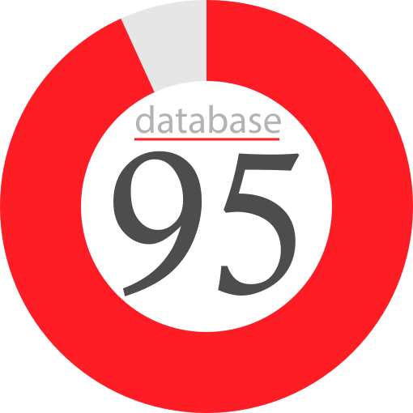
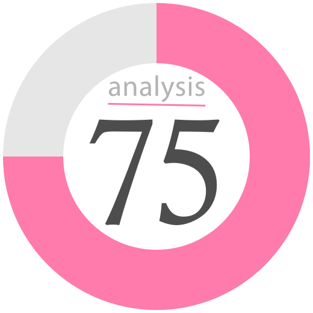

Skills Summary
I have a wide variety of skillsets that I leverage as a full stack developer. My biggest strength is pure coding, especially in backend focused business logic applications. I also excel at managing SQL databases in a multitude of RDBMS platforms. Other skills that I have honed through my experience are UX design and system analysis.
-
Programming

Programming logic into web applications in a multitude of languages such as Java, C#, JavaScript, etc.
-
Database Design
Maintaining SQL relational databases through administration, design, and SQL implementation.
-
User Experience

Creating and designing user interfaces and applications to be intuitive, pleasant, and efficient while fulfilling users needs.
-
System Analysis
The analysis of existing systems and the design of improved systems with the use of modern web applications.
Work Experience
I have been fortunate to spend time working as a fictional developer with some excellent fictional development teams. I have experience working many different forms of business related web applications.
-
Junior Programmer @WeMakeApps
Jan 2010 - Mar 2012
I was responsible for coding XML based SOAP web services in a Java backend for use by multiple web applications.
-
.NET Developer @WeMakeApps
Mar 2012 - Nov 2014
I was responsible for developing fully featured ASP.NET web form applications to provde web solutions for client businesses.
-
Frontend Developer @WebSolutions
Jan 2015 - Aug 2016
I was responsible for coding pure Javascript websites for use by multiple clients.
-
Full stack Developer @Javalanche
Jan 2019 - Apr 2019
I was responsible for coding XML based SOAP web services in Java, and MariaDB databases for use by React front end apps.
Education
I have been fortunate to achieve an excellent education in the Digital Media and IT Program of the Norther Alberta Institute of Technology.
-
Diploma Computer Software Development
SEPT 2017 - CURRENT
www.nait.ca
Digital Media & IT
Northern Alberta Institute of Technology
A 2 year diploma specializing in .NET and Java backend development. Web design and Javascript frontend development were explored as well.
-
Diploma Game Programming
SEPT 2014 - APRIL 2016
www.nait.ca
Digital Media & IT
Northern Alberta Institute of Technology
A 2 year diploma specializing in game scripting in the Unity3D game engine using C#. Pure object oriented programming techniques were learnt.
-
High School Diploma
SEPT 2011 - JUNE 2014
melazerte.epsb.ca
Alberta Diploma
M.E. LaZerte High School
A standard Alberta high school diploma. I also took Digital Arts classes where graphic design and simple scripting was taught.
-
Immortal Spartan Certificate
SEPT 832BC - AUG 1257AD
www.thisissparta.gr
Immortal Spartan Training
Fields of Sparta
Exhaustive training as a Spartan soldier causing immortality. Would've died with Leonidas, but got lost in the woods before the battle.
Where to Find Me
Specializing in backend Java and .NET development, I am a full stack developer that develops efficient and high quality web applications. My philosophy involves making an intuitive and pleasant user experience while making sure that the application can provide all the necessary services in an efficient, secure, high quality manner.
GitHub
CodePen
LinkedIn
Twitter
Slack